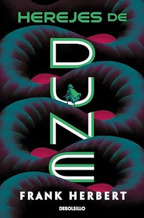
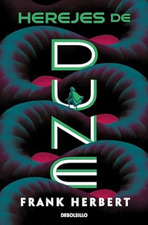

Libros de DUNE (saga original)
Dune es una novela épica de ciencia ficción escrita por Frank Herbert en 1965. Su éxito fue rotundo; en el año de su salida, logró el Premio Nébula a la mejor novela en su primera edición y al año siguiente el Premio Hugo a la mejor novela. Publicada en español por la editorial Acervo en 1975, abrió una de las sagas más importantes de la literatura fantástica y de ciencia ficción. En 2007 registró ventas de más 12 millones de ejemplares, convirtiéndola en la novela de ciencia ficción más vendida a la fecha.1
Posteriormente el autor continuaría la saga con El mesías de Dune (1969) y la concluyó con Hijos de Dune (1976), que cerraba la trilogía prevista. El éxito de la trilogía lo llevó sin embargo a escribir posteriormente un cuarto libro, Dios emperador de Dune (1981), con el que esperaba cerrar la (en ese momento) tetralogía. Años después retomaría la saga con el quinto y sexto volumen, Herejes de Dune (1984) y Casa Capitular Dune (1985) respectivamente, dejando un final completamente abierto a una nueva entrega.
El éxito de la novela provocó mucho interés en su traslado a la gran pantalla, proyecto que tras muchas vicisitudes se plasmaría en la película Dune (1984), dirigida por David Lynch. Años después, en 2000, también se realizaría una miniserie de televisión inspirada en la primera novela, titulada Dune, a la que seguiría otra miniserie inspirada en las dos novelas siguientes, titulada Hijos de Dune. En 2021, Denis Villeneuve presentó la película Dune: parte 1 en el Festival Internacional de Cine de Venecia.
Tras la muerte de Frank Herbert, se han añadido a la saga dos trilogías que narran los antecedentes que condujeron a los hechos de la saga principal, Preludio a Dune (1999-2001) y Leyendas de Dune (2002-2004), escritas por el hijo del autor, Brian Herbert, en asociación con el escritor de ciencia ficción Kevin J. Anderson, así como dos novelas que concluyen la saga original, Cazadores de Dune (2006) y Gusanos de arena de Dune (2007).


 
